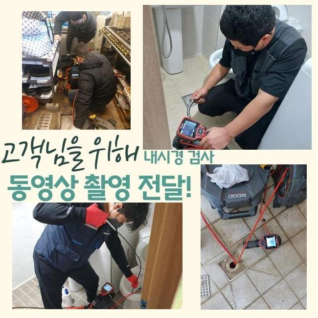
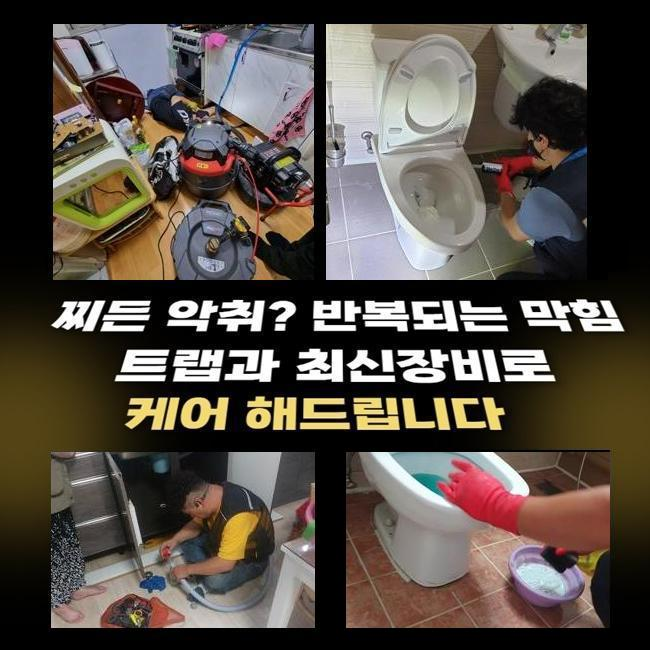
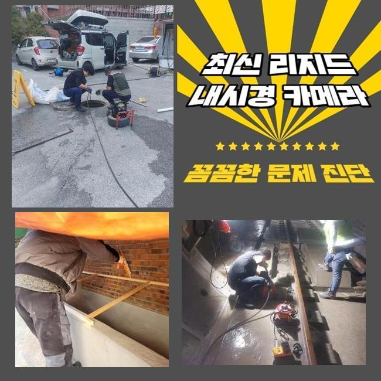
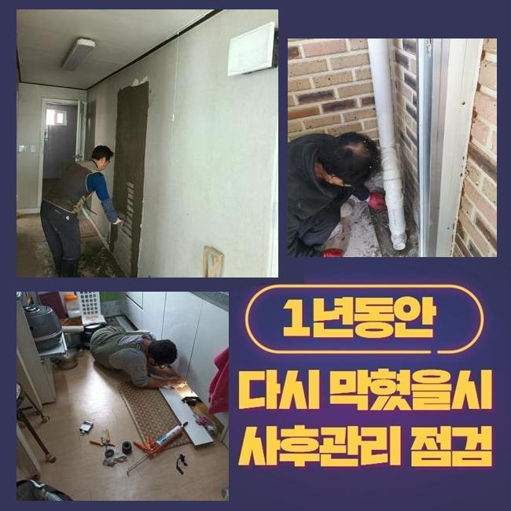
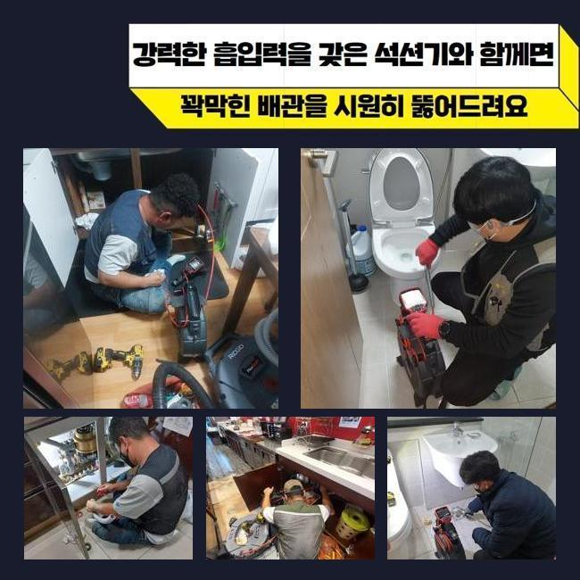
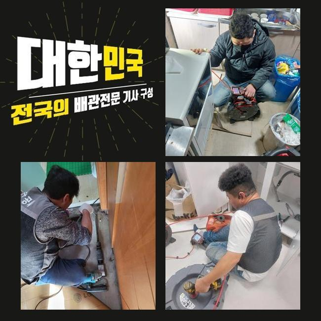
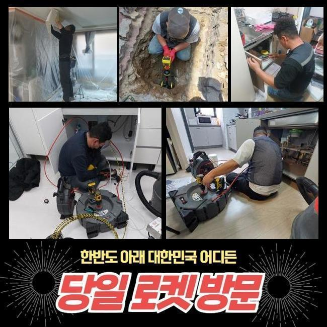

🏠 금천구 가산동오수관역류 시흥동 하수구뚫는비용 물샘전문업체
시흥 하수구막힘 전문 시공 후기

📋 작업 개요
- 위치: 시흥
- 서비스 유형: 하수구막힘, 배관막힘, 집수정막힘, 누수수리, 역류해결, 뚫는업체, 배관청소, 설비공사
- 작업 일시: 2025. 2. 22. 5:44
- 업체명: 하수구수사대 (010-5615-2118)
🔍 문제 상황
금천구 가산동오수관역류 시흥동 하수구뚫는비용 물샘전문업체
다세대 주택의 배수구를 점검하지 않고 사용하면 이물질이 계속해서 내부에 쌓여서 하수라인의 역류문제가 발생할 확률이 높아요
그렇기때문에 연식이 오래 되신 경우엔 주기적으로 하수구의 상태를 확인하시는 것을 추천합니다
점심쯤이 지나서 사례자님께서 배수구가 막혀서 문제가 생겼다고 문의를 해주셨습니다
출동해보니 조금 외진 곳의 주택이였고 주변에 캠핑시설이 위치해있는 상태였어요
건물을 올린지 몇 년 되지도 않았는데 건물 바깥쪽에서 역류사고가 반복적으로 일어난다고 설명 해주셨습니다
확인해본 결과로는 창고 안쪽으로 설치되어 있는 집수정이 외부에 있는 정화조로 흘러가는 상황이였습니다
정화조가 위치한 곳이 꽤 멀어서 이곳에 설치 하셨다고 말씀하셨어요
의뢰인께 막혀있는 지점들을 찾는다해도 중간 점검구가 없는 경우엔 좀 더 시간이 많이 걸린다고 먼저 안내해드렸고 동의를 해주셨습니다
집수정에서 내시경기를 넣었으나 오염물질이 많아서 정화조쪽으로 라인을 넣을 수가 없었습니다

🔎 원인 분석
💡 전문가 진단: 정밀 진단 장비를 사용하여 슬러지의 고착 여부를 판명하고 타격/세척 작업을 실시했습니다.
이물질이 꽉 막혀있는 상황을 사례자님께도 보여드리면서 자세하게 말씀드렸어요
샤프트기계로 작업을 시작했어요
기기에 물티슈를 비롯한 머리카락들이 계속해서 걸려나왔어요
다세대주택의 역류를 발생시키는 막힘요소는 머리카락이나 물티슈등이 가장 많아요
의뢰인님께 이러한 이물질은 분리하여 배출하시라고 안내 해드렸습니다
물티슈같은 것은 화학적인 성분으로 일반 휴지처럼 종이가 아니라 플라스틱이므로 물과 만나도 녹지 않는 특징을 가지고 있습니다
요새 물에 녹는 물티슈도 있다고는 하지만 그것 또한 뭉쳐서 사용하면 배수구가 막히면서 역류현상이 나타날 수 있습니다
하수라인 안에 있던 침전물과 섞여 슬러지화 되어 막힘문제를 일으킵니다
하수시설을 이용하실땐 머리카락 외 이물질들을 따로 버리는 습관을 가져야해요
하수구는 하수만을 다루는 시설인 것을 기억하여 이물질등은 분리 해주세요

🔧 작업 과정
다음으로 창고쪽에서 내시경장비를 투입합니다
배수관이 길어서 내시경기기로 마지막 부분까지 진입하는게 불가능해서 쏜드기기를 사용했어요
막힘이 추정되는 부위에 반복적으로 노폐물 제거를 진행했어요
앞에처럼 머리카락등의 이물질이 계속 나오는 것을 보고 고객분께서도 심각함을 인지하신 것 같았어요
저희 전문진에게 동일한 문제가 발생하지 않을 수 있는 사용법을 알려달라고 하셔서 답변을 드렸어요
일반적으로 큰어려움 없이 흘러가면 자연스레 물과 함께 배출된다고 알고 계시지만 기울기가 가파른 경우엔 안쪽에 불순물도 생기기때문에 머리카락 또는 물티슈등과 기름등을 흘려보내면 위험합니다
내시경기를 투입해서 이물질들이 모두 배출되었는지 확인했습니다
정화조와 집수정의 전부 체크 하였고 남아있는 불순물 없이 깨끗한 상태가 확인되어 작업을 마무리 했습니다
사례자님께도 보여드렸더니 안심 되신다고 하셨어요
보통 산성약품을 통해서 간단히 뚫을 수 있다고 생각하시는 분들도 있으시겠지만 아주 위험한 방법입니다
의뢰인께서 하수시설을 사용할때 이물질들을 따로 배출하며 다세대주택의 사용년수가 오래 되셨다면 전문 업체에게 맡겨 예방검진을 진행하시는게 좋습니다
크게 신경을 쓰지않고 사용하시다가 역류상황이 일어나서 큰공사를 피할 수가 없어서 금액적으로 부담감이 상승하게 됩니다
앞서 말씀드린 것처럼 배수관 문제를 방치하시면 비용적인 고객님의 부담감이 더해진다는 것을 잊지말고 미리 예방하셔야 해요
대부분의 수리를 마치고 작업지 주변을 마무리하며 청소 해드렸어요
하수에서 지독한 냄새가 나서 전용세제를 뿌려두고 수전에 연결하여 전체적으로 청소했습니다
원래 이러한 현장에서 주변까지 저희 전문가들이 특수청소하는 경우는 많지 않아요


✅ 작업 완료
오늘 현장은 오염의 정도가 너무 심한 편이라서 저희도 그냥 지나칠 수가 없었습니다
저희 전문가는 배수구의 머리카락등은 당연하고 하수시설 안의 오염물질들을 전부 빼내고 하수의 흐름 방향이 잘 나오는지 확인을 해요
사례자님께서 저희를 신뢰하여 의뢰를 주실 수 있게 최선을 다하며 관련된 문제를 상세히 상담 받고 싶으시면 언제든지 연락주세요
배수관 문제를 비용적인 부분을 최소화한 방법으로 해결하시고자 한다면 최대한 신속한 대응법이 최선임을 알고 계셔야 합니다
일상 생활 속에서 이와같은 문제가 발생하지 않아야 하지만 문제가 의심된다면 조속히 전문진에게 의뢰를 하시기 바랍니다




⚠️ 베란다 누수 및 방수 관리 방법
- ✅ 비가 많이 올 때 창틀 주변이나 아래층 천장에 얼룩이 생기는지 정기적으로 확인해 보세요.
- ✅ 우수관 주변 실리콘 마감이 들뜨거나 깨진 틈새가 있는지 손상 여부를 수시로 체크하세요.
- ✅ 베란다 바닥 타일의 줄눈(메지)이 소실되면 그 틈으로 물이 침투하여 누수가 유발됩니다.
- ✅ 누수 의심 증상 발견 시 방치하면 아래층 손실이 커지므로 즉시 전문가의 진단을 받으십시오.
💡 핵심 정리
- 확실한 장비 작업(내시경 점검 및 샤프트 스케일링)으로 원인을 뿌리 뽑습니다.
- 작업 후 1년 이내에 동일한 부위 재발 시 100% 무상 A/S 서비스를 보장합니다.
- 서울 · 경기 · 인천 전 지역에 24시간 언제든 긴급 출동할 수 있도록 항시 대기 중입니다.
❓ 자주 묻는 질문 (FAQ)
🚨 시흥 하수구막힘 문제로 고민이신가요?
정확한 원인 진단과 확실한 시공으로 재발 없는 해결을 약속드립니다.
24시간 긴급 출동 | 서울 · 경기 · 인천 전지역 | 1년 내 재발 시 무상 A/S